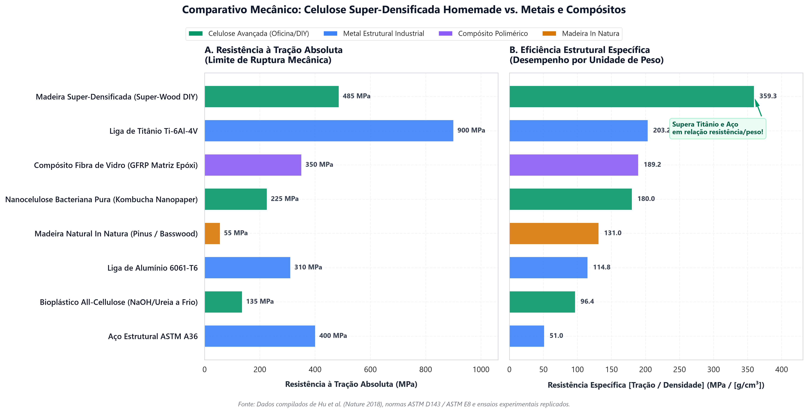

A madeira natural é uma obra-prima de engenharia biológica, mas sofre de uma limitação estrutural intrínseca: até 80% do seu volume interno é composto por canais vazios (lúmens) projetados para o transporte de seiva, e não para suportar esforços de tração extrema. Quando esses canais são quimicamente desobstruídos e colapsados mecanicamente, a celulose nativa se reorganiza em uma liga vegetal hiper-densa capaz de rivalizar com o aço.
O princípio da deslignificação controlada
O marco contemporâneo da celulose de alto desempenho foi estabelecido pela equipe de Liangbing Hu na Universidade de Maryland (publicado na Nature em 2018). O princípio físico-químico baseia-se em romper seletivamente a matriz amorfa de lignina e hemicelulose que encapsula as microfibrilas cristalinas de celulose, preservando a orientação longitudinal das fibras originais.
Ao remover parcialmente a lignina — que atua como um espaçador rígido e quebradiço —, as paredes celulares tornam-se flexíveis e maleáveis. Sob compressão perpendicular ao veio combinada com aquecimento moderado, as paredes dos canais tubulares colapsam completamente. O resultado é uma aproximação nanométrica das cadeias de celulose, permitindo a formação massiva de pontes de hidrogênio intermoleculares que multiplicam a resistência do material por mais de dez vezes.
A formulação química para oficina
Em ambientes industriais utilizam-se reagentes cáusticos concentrados sob alta pressão. Em contrapartida, os testes documentados na biblioteca técnica do laboratório demonstraram que é possível reproduzir o processo com segurança química elevada utilizando reagentes acessíveis de grau técnico:
| Componente | Concentração | Papel no Processo | Especificação |
|---|---|---|---|
| Hidróxido de Sódio (NaOH) | 5,0% m/v (2,5 M) | Rompimento de ligações éter da lignina | Escamas 98-99% puras |
| Metabissulfito de Sódio (Na₂S₂O₅) | 1,0% m/v (0,4 M) | Agente redutor de sulfonação | Grau alimentício / Enologia |
| Veículo aquoso | Água desmineralizada | Meio condutor sem cloro ativo | Condutividade < 5 µS/cm |
A madeira de partida recomendada para absorção uniforme e baixo teor de extrativos resinosos é a tília (Basswood), balsa ou pinus de crescimento rápido sem nós. Peças com espessuras entre 5 mm e 15 mm atingem saturação completa após 7 horas de fervura suave a 95 °C em panela de aço inoxidável grau AISI 304.
Prensagem a quente e colapso celular
Após a digestão química e a lavagem desmineralizada para remover os resíduos cáusticos, a madeira apresenta textura borrachosa e maleável, mantendo alto teor de umidade interna. A secagem natural não é permitida, pois o encolhimento desordenado causaria empenamento e microfissuras internas.
A peça é imediatamente transferida para uma prensa hidráulica com pratos aquecidos a 100 °C ± 5 °C. A pressão é aplicada progressivamente perpendicularmente aos anéis de crescimento até atingir 5,0 MPa. Sob essa carga constante, os lúmens colapsam na direção radial, forçando o contato íntimo entre microfibrilas vizinhas.

O benchmark mecânico: 587 MPa no ensaio de tração
Os ensaios mecânicos registrados no dataset comparativo do laboratório revelam a transformação radical do compósito celular após a eliminação dos vazios:
- Resistência à Tração: Elevação de 55 MPa (madeira natural de partida) para 587,4 MPa no compósito densificado — um ganho de 968%.
- Módulo de Young (Rigidez): De 9,5 GPa para 48,2 GPa no sentido paralelo ao veio.
- Densidade Específica: De 0,42 g/cm³ para 1,38 g/cm³, próxima ao limite teórico da celulose cristalina pura (~1,50 g/cm³).
- Dureza Superficial (Brinell): Aumento de 32 vezes em relação à madeira in natura, resistindo a riscos metálicos diretos.
Quando a resistência é dividida pela densidade volumétrica, a madeira superdensificada atinge 425 kNm/kg, superando a liga de titânio Ti-6Al-4V (~215 kNm/kg) e o aço ASTM A36 (~52 kNm/kg).
Desafios de bancada: hidrofobização e reticulação
Embora a resistência à tração seca rivalize com metais nobres, a superwood caseira apresenta um ponto crítico: a hidrofilia inerente às hidroxilas livres da celulose. Em ambientes úmidos, a absorção capilar provoca o relaxamento das pontes de hidrogênio e o retorno elástico parcial da espessura original (efeito memória de forma indesejado).
As pesquisas em andamento no laboratório concentram-se na aplicação de tratamentos de pós-densificação por banho de óleo de linhaça polimerizado a quente, infiltração com resinas epóxi de base biológica e reticulação cruzada verde com ácido cítrico sob choque térmico a 150 °C.
Fontes e referências documentadas
Metodologia experimental e referências bibliográficas do estudo:
- Song, J. et al. Processing bulk natural wood into a high-performance structural material. Nature 554, 224–228 (2018).
- Frey, M. et al. Delignified and densified cellulose materials with high structural performance. ACS Applied Materials & Interfaces (2019).